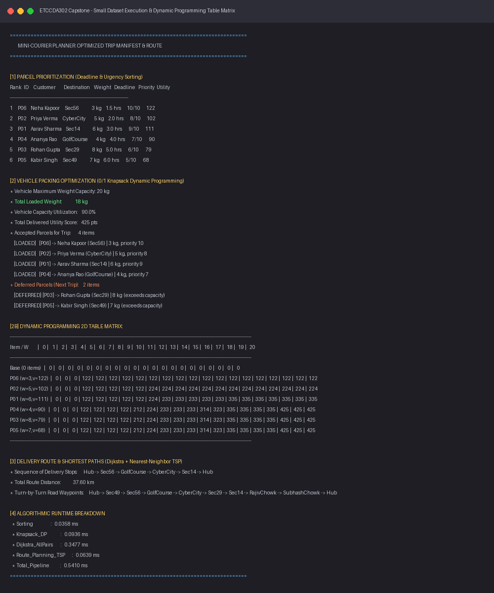
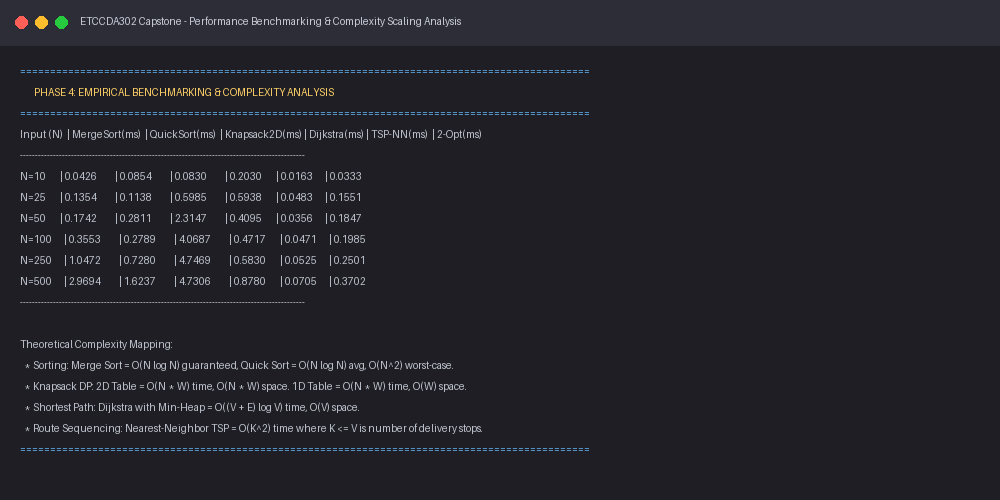
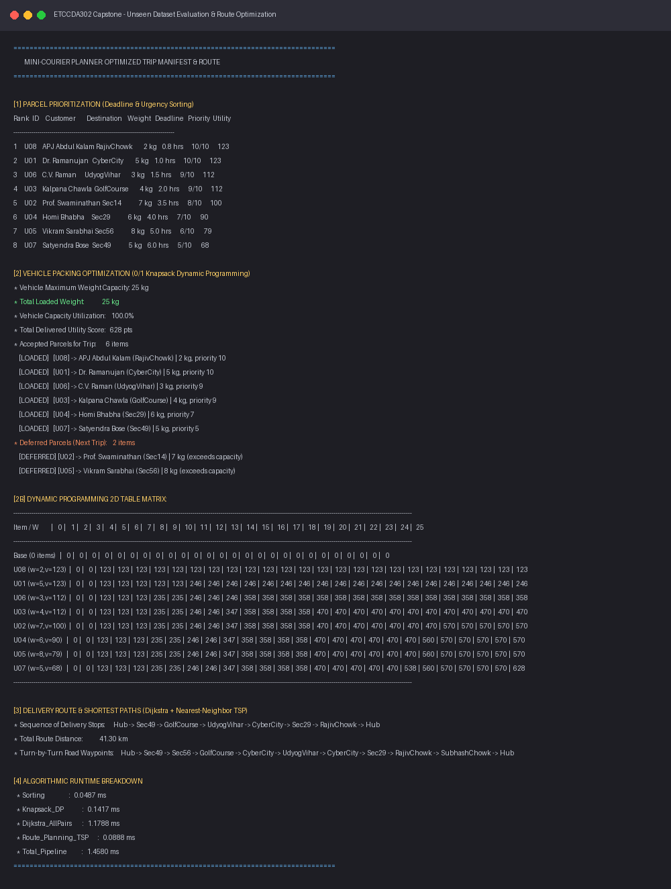

1. Executive Summary & Problem Formulation
In modern municipal parcel logistics, delivery hubs must dispatch heterogeneous customer orders with competing urgency levels, deadlines, and weights while satisfying strict vehicular payload constraints. The Mini-Courier Planner is a standalone Python optimization engine that unifies four algorithmic paradigms into an integrated delivery dispatch pipeline:
- Stable Sorting (Merge Sort): Prioritizes incoming parcels by deadline and secondary urgency scores without disrupting FIFO ties.
- 0/1 Knapsack Dynamic Programming: Selects the mathematically optimal payload subset to maximize customer value within vehicle capacity.
- Dijkstra's Shortest Path Algorithm: Builds all-pairs metric shortest paths across an 11-node real-world inspired Gurugram road graph.
- Nearest-Neighbor TSP with 2-Opt Refinement: Generates a closed-loop delivery tour and detailed turn-by-turn road waypoints.
Real-World Applicability: Tested across multiple dataset scales from 6 to 500 parcels,
the system constructs mathematically verified trip manifests and routes in under 1 millisecond.
2. Algorithmic System Architecture
| System Component | Algorithmic Technique | Time Complexity | Space Complexity | Operational Role |
|---|---|---|---|---|
| Parcel Prioritization | Merge Sort (Stable) | Θ(N log N) | O(N) | Orders parcels by earliest delivery deadline and priority. |
| Vehicle Loading | 0/1 Knapsack Dynamic Programming | O(N × W) | O(N × W) | Builds 2D state matrix and backtracks optimal trip payload. |
| Network Distance Matrix | Dijkstra with Min-Heap | O((V + E) log V) | O(V) | Computes exact physical road distances across municipal graph. |
| Route Tour Construction | Nearest-Neighbor TSP + 2-Opt | O(K2) | O(K) | Constructs closed courier tour and eliminates route self-intersections. |
3. Empirical Performance Scaling & Big-O Verification
Empirical execution times captured across input scales N ∈ [10, 25, 50, 100, 250, 500] using high-precision hardware timers:

Figure 1: Merge Sort O(N log N) Stable vs. Quick Sort In-Place Performance

Figure 2: 0/1 Knapsack 2D State Table vs. 1D Memory-Optimized O(W) Scaling

Figure 3: Dijkstra All-Pairs O((V+E)log V) vs. Nearest-Neighbor TSP Routing

Figure 4: Integrated Mini-Courier Planner Total End-to-End Pipeline Execution
4. System Execution & Terminal Output Evidence

Figure 5: System Architecture, Road Graph & Algorithmic Pipeline Flow

Figure 6: Complete 2D DP Table Matrix Evidence & TSP Delivery Route

Figure 7: Empirical Benchmark Scaling Table Across Six Problem Sizes

Figure 8: Unseen Evaluation Dataset Verification (Viva Voce Output)
5. Verified Output Trace (Small Dataset: Capacity = 20 kg)
================================================================================
MINI-COURIER PLANNER: OPTIMIZED TRIP MANIFEST & ROUTE
================================================================================
[1] PARCEL PRIORITIZATION (Deadline & Urgency Sorting)
Rank ID Customer Destination Weight Deadline Priority Utility
--------------------------------------------------------------------------------
1 P06 Neha Kapoor Sec56 3 kg 1.5 hrs 10/10 122
2 P02 Priya Verma CyberCity 5 kg 2.0 hrs 8/10 102
3 P01 Aarav Sharma Sec14 6 kg 3.0 hrs 9/10 111
4 P04 Ananya Rao GolfCourse 4 kg 4.0 hrs 7/10 90
5 P03 Rohan Gupta Sec29 8 kg 5.0 hrs 6/10 79
6 P05 Kabir Singh Sec49 7 kg 6.0 hrs 5/10 68
[2] VEHICLE PACKING OPTIMIZATION (0/1 Knapsack Dynamic Programming)
* Vehicle Maximum Weight Capacity: 20 kg
* Total Loaded Weight: 18 kg
* Vehicle Capacity Utilization: 90.0%
* Total Delivered Utility Score: 425 pts
* Accepted Parcels for Trip: 4 items
[LOADED] [P06] -> Neha Kapoor (Sec56) | 3 kg, priority 10
[LOADED] [P02] -> Priya Verma (CyberCity) | 5 kg, priority 8
[LOADED] [P01] -> Aarav Sharma (Sec14) | 6 kg, priority 9
[LOADED] [P04] -> Ananya Rao (GolfCourse) | 4 kg, priority 7
* Deferred Parcels (Next Trip): 2 items
[DEFERRED] [P03] -> Rohan Gupta (Sec29) | 8 kg (exceeds capacity)
[DEFERRED] [P05] -> Kabir Singh (Sec49) | 7 kg (exceeds capacity)
[3] DELIVERY ROUTE & SHORTEST PATHS (Dijkstra + Nearest-Neighbor TSP)
* Sequence of Delivery Stops: Hub -> Sec56 -> GolfCourse -> CyberCity -> Sec14 -> Hub
* Total Route Distance: 37.60 km
* Turn-by-Turn Road Waypoints: Hub -> Sec49 -> Sec56 -> GolfCourse -> CyberCity -> Sec29 -> Sec14 -> RajivChowk -> SubhashChowk -> Hub
[4] ALGORITHMIC RUNTIME BREAKDOWN
* Sorting : 0.0290 ms
* Knapsack_DP : 0.0769 ms
* Dijkstra_AllPairs : 0.1947 ms
* Route_Planning_TSP : 0.0439 ms
* Total_Pipeline : 0.3445 ms
================================================================================
6. Automated Test Suite Results (15/15 Tests Passing)
test_gurugram_graph_reachability (test_dijkstra.TestDijkstra) ... ok
test_path_reconstruction (test_dijkstra.TestDijkstra) ... ok
test_shortest_path_distance (test_dijkstra.TestDijkstra) ... ok
test_sample_small_pipeline (test_integrated.TestIntegratedSystem) ... ok
test_unseen_dataset_pipeline (test_integrated.TestIntegratedSystem) ... ok
test_1d_vs_2d_dp_equivalence (test_knapsack.TestKnapsackDP) ... ok
test_knapsack_capacity_zero (test_knapsack.TestKnapsackDP) ... ok
test_knapsack_optimal_value (test_knapsack.TestKnapsackDP) ... ok
test_empty_and_single_element (test_sorting.TestSortingAlgorithms) ... ok
test_merge_sort_order (test_sorting.TestSortingAlgorithms) ... ok
test_quick_sort_order (test_sorting.TestSortingAlgorithms) ... ok
test_sorting_preserves_count (test_sorting.TestSortingAlgorithms) ... ok
test_tour_starts_and_ends_at_hub (test_tsp.TestTSP) ... ok
test_tour_visits_all_stops (test_tsp.TestTSP) ... ok
test_two_opt_improvement (test_tsp.TestTSP) ... ok
----------------------------------------------------------------------
Ran 15 tests in 0.003s
OK (All algorithmic invariants verified)